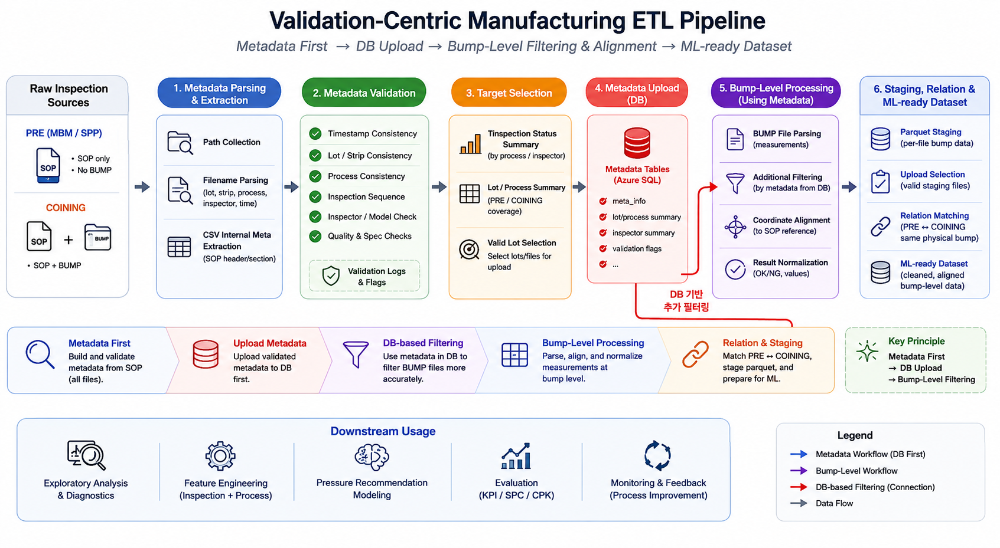

Machine Learning
불균형 학습, oversampling, AdaBoost와 수요 예측 연구
ML 연구 살펴보기 →Machine Learning · Deep Learning · Data Architecture

불균형 데이터와 예측 모델을 연구하고, 생성 모델·Computer Vision·분산 학습 프로젝트를 수행합니다. ETL과 운영 데이터 구조 설계 경험을 바탕으로 데이터 준비부터 모델 적용까지 연결합니다.
불균형 학습, oversampling, AdaBoost와 수요 예측 연구
ML 연구 살펴보기 →GAN, OOD, Computer Vision과 Federated Learning 프로젝트
DL 프로젝트 살펴보기 →메타데이터 검증·ETL, 문서 데이터 표준화와 DB 스키마 설계
데이터 설계 경험 살펴보기 →데이터 불균형, 노이즈, 극단 수요처럼 학습과 예측을 어렵게 만드는 문제를 다룹니다.
분류 복잡도를 활용한 oversampling 크기 산출과 클래스 간·내 변동성을 고려한 AdaBoost 노이즈 필터링을 연구했습니다.
공유자전거의 극단 수요 예측을 위한 AdaBoost.RDT와 마이크로 모빌리티 수요 예측을 위한 공간 단위 생성 프레임워크를 개발했습니다.
생성 모델, 분포 밖 데이터 탐지, 분산 학습과 시각 인식을 다룬 프로젝트 및 연구 발표입니다.
원천 데이터의 의미와 품질을 검증하고, 서로 다른 데이터를 일관된 기준으로 연결해 학습과 운영에 활용할 수 있는 구조를 설계합니다. 메타데이터 관리, 정합성 검증, 데이터 정렬·정규화, 적재 및 관계 설계를 중심으로 경험을 정리했습니다.
검사 파일의 메타데이터를 먼저 검증·적재하고, DB의 검증 정보를 이용해 개별 범프 측정값을 필터링하는 파이프라인입니다. PRE와 COINING 검사 데이터를 동일한 물리적 범프 기준으로 연결해 분석·학습용 데이터셋을 구성합니다.

구축 및 적용: 약 5만 개의 검사 결과 파일에서 5천 행의 학습 데이터셋을 구성하고, 전처리·모델 학습·평가·대시보드 초안 구현과 1차 PoC·현장 테스트를 수행했습니다. 운영 자동화 이전 단계까지 직접 설계·구현했습니다.
다양한 형식의 문서를 분석해 데이터의 의미를 파악하고, 일관된 기준으로 정리하는 데이터 표준화 업무를 수행했습니다.
핵심 역량: 문서 분석 · 데이터 표준화 · 데이터 품질 검토 · 구조 설계
대규모 제조 데이터를 대상으로 ETL 파이프라인 및 데이터 적재 구조를 설계하고, irregular time-series 데이터 정합성 문제를 해결.
센서 및 검사 데이터의 시간축 불일치 문제를 해결하기 위한 feature engineering 및 데이터 동기화 로직 설계.
실제 운영 환경을 고려한 ML pipeline 및 평가 구조 설계 경험.
parquet 기반 staging 구조 및 대용량 제조 데이터 처리 구조 검토.
자세한 내용은 Industrial ML System Design 저장소에 정리했습니다.
ML·DL 방법론과 데이터 설계를 제조, 모빌리티, 시각 보조 및 데이터 분석 문제에 적용했습니다.
불균형 학습, oversampling, AdaBoost 및 분류 복잡도를 중심으로 수행한 연구입니다. 가능한 경우 논문과 실행 코드를 함께 연결했습니다.
🔹 기존의 grid-based areal unit 산정방식이 가지고 있는 MAUP를 해결하는 areal unit 프레임워크 개발
🔹 잔차기반 DT를 기반해, 공유자전거 대여분포내 존재하는 Extreme event와 normal event를 모두 적절히 예측하는 모델 개발
🔹 확률모형을 기반해, 타자와 투수간 1대1 대결해서, 투수에게 유리한 상황을 추정
🔹 클래스 간 분포 차이를 고려한 노이즈 필터링 기법을 제안하여 기존 AdaBoost의 한계를 개선.
🔹 기존 연구에서는 오버샘플링 크기를 일괄적으로 설정했으나, 본 연구에서는 분류 복잡도를 기반으로 최적 크기를 결정하는 방법을 제안.
학생연구원으로 참여한 연구 과제입니다.
AIguru에서 진행한 ML 세션 자료와 연구 발표입니다. 개념과 모델 해석에서 시작해 데이터 검증, 시계열, 알고리즘의 수식까지 연결합니다.
데이터 수집부터 평가·적용까지의 흐름과 회귀 계수, 과적합, 다중공선성, R² 해석을 다룹니다.
Decision Tree의 분기와 예측, Bagging·Boosting의 차이, 변수 중요도를 설명합니다.
보조 예제: MDI · OOB Permutation · SHAPHard·Soft Clustering, 거리와 유사도 선택, 스케일링에 따른 변화와 군집 결과 해석을 다룹니다.
보조 예제: MinMax 스케일링과 표준화 비교회귀·분류 지표의 의미와 한계, 중요한 구간의 성능을 확인하는 방법을 정리합니다.
Data Leakage, 편향, 분포 변화, 과적합과 타깃 정의를 통해 모델 신뢰성을 점검합니다.
시간 의존성, 데이터 누수, 시점 기반 검증, 재학습과 배포 후 입력 문제를 다룹니다.
함수와 수학 기호, 입력·예측값의 관계, 손실함수를 통해 학습의 의미를 설명합니다.
회귀 계수의 계산, R²의 구성, t/F-검정과 다중공선성을 수식으로 살펴봅니다.
Gini·Entropy, 분류·회귀의 분기 기준, 변수 중요도와 Bagging·Boosting의 계산 원리를 다룹니다.
제조 AI에서 모델 성능보다 중요한 cause-effect mapping과 데이터 validation 문제를 정리했습니다.
제조 AI에서 학습 데이터와 운영 데이터가 왜 다를 수 있는지, 그리고 setpoint와 actual value의 차이가 왜 중요한지 정리했습니다.
제조 AI에서 왜 평가 기준을 현실적으로 수립해야 하는지, 그러면 현실적으로 어떻게 수립할 수 있는지를 정리했습니다.
데이터사이언스 박사로서 불균형 학습과 예측 알고리즘을 연구했습니다. ML 연구, DL 프로젝트, 운영 데이터 구조 설계를 연결하며 다양한 도메인의 데이터 문제를 다룹니다.
참여 연구 과제 · 수상 경력 · Talks & Sessions
학력:
이메일: skypo1000@ds.seoultech.ac.kr
GitHub: https://github.com/DDohyeon2941